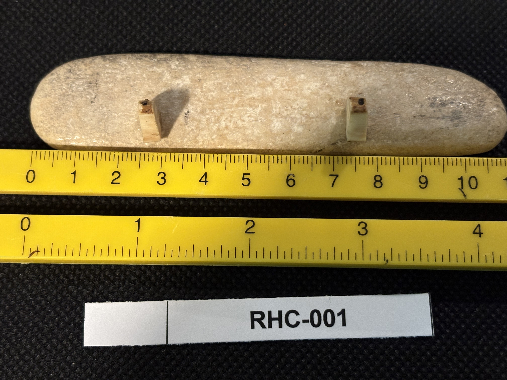
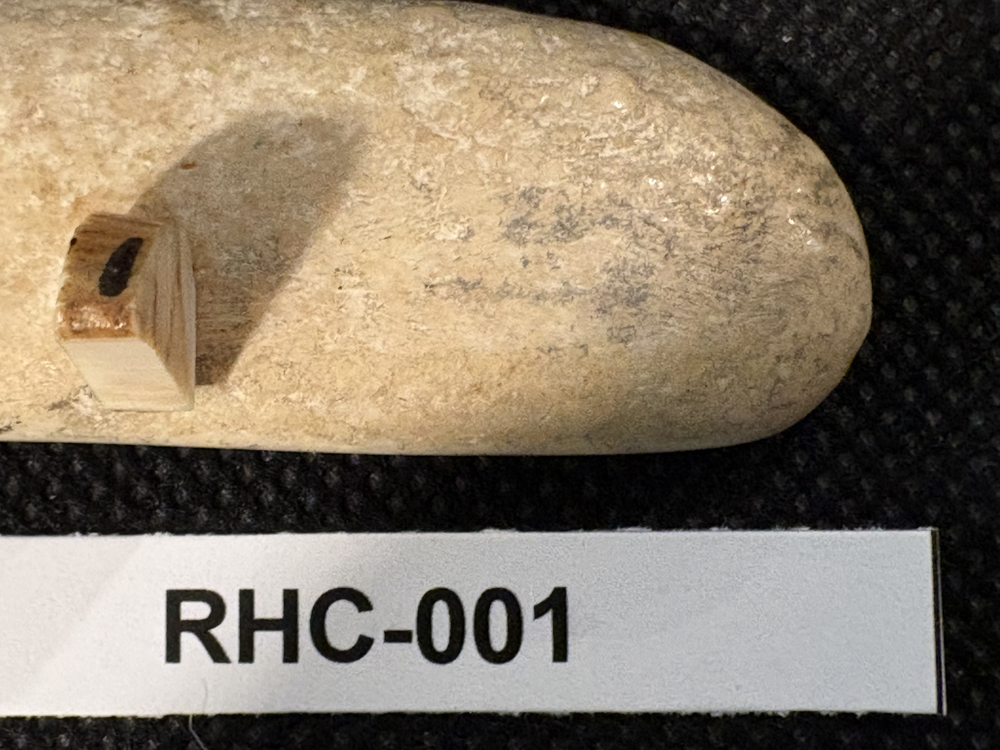

RHC-001 reviewed
Alaska Sled Dog Team Scrimshaw Tooth, signed C. Choules 1990


- Object Type
- Engraved tooth (unmounted)
- Material
- Sperm whale tooth (presumed, moderate-high confidence from visual inspection only — not physically examined). Reasoning: overall form is a blunt, curved cone widening toward a broader root end, the classic silhouette of a sperm whale tooth rather than a shaped bone piece or a walrus tusk segment (which tend to be straighter/more cylindrical). Surface is dense and smooth with age-related mottling, not the porous texture with fine dark pore flecks typical of worked bone. No cut cross-section is visible to check for the marbled core / Schreger lines that would help distinguish tusk ivory. True material ID would require physical inspection (weight, cross-section, or UV fluorescence test).
- Dimensions (cm)
- length: 10.5cm, width: 2.7cm — measured off the cm scale on the reference ruler; height not separately measured
- Subject Matter
- A dog sled (mushing) team scene: a musher standing on a sled being pulled by a line of ~8 sled dogs, moving left to right across a snowy/open landscape with a tree line and mountain range in the background. Classic Alaskan wilderness scrimshaw motif.
- Inscriptions
- “ALASKA”
- “C. Choules '90”
- Artist Attribution
- C. Choules
- Date / Period
- 1990 (dated in signature)
- Mount / Display Stand
- Not mounted — photographed lying flat on a black fabric background next to a dual-scale (cm/inch) reference ruler. Two small wood tabs, each pinned on with a single dark pin, are affixed to the underside (visible in RHC-001-b) — likely risers to keep the piece from rolling during photography rather than a display mount, but noted since they are physically attached to the object.
- Color / Technique
- Traditional scrimshaw line engraving with black ink/pigment rubbed into incised lines
- Condition Notes
- Appears stable and intact in photos; surface shows natural mottling/staining typical of aged tooth material. No visible cracks or losses. Not physically examined.
- Distinguishing Features
- Signed and dated piece — unusual to have a firm artist name + year for this collection, worth prioritizing for research.
- Legal / Regulatory Status
- Material presumed marine mammal (sperm whale tooth) — dated 1990 in the engraving itself, i.e. well after the 1972 Marine Mammal Protection Act cutoff. Post-Act marine mammal ivory/tooth material is subject to significant restriction on sale/interstate commerce in the US (exceptions exist for certain pre-existing scrimshaw/antique categories, but a 1990 date does not qualify as a pre-Act 'grandfathered' antique). This is a flag for legal review before any loan, sale, or public display — not a legal determination.
- Rights / Copyright
- Underlying engraved image likely remains under copyright of the artist ('C. Choules') or their estate, per standard copyright term, independent of the family's ownership of the physical object.
- Keywords
- Alaska sled dogs mushing signed dated 1990 C. Choules whale tooth wilderness scene
- Status
- reviewed
- Date Cataloged
- 2026-07-15
Open Research Questions
1) Identify scrimshaw artist 'C. Choules' — not looked up yet (deferred to phase 3 research pass). 2) Material presumed sperm whale tooth from shape/surface alone — confirm via physical inspection if precise ID matters for museum/loan purposes (weight, cross-section, or UV fluorescence).